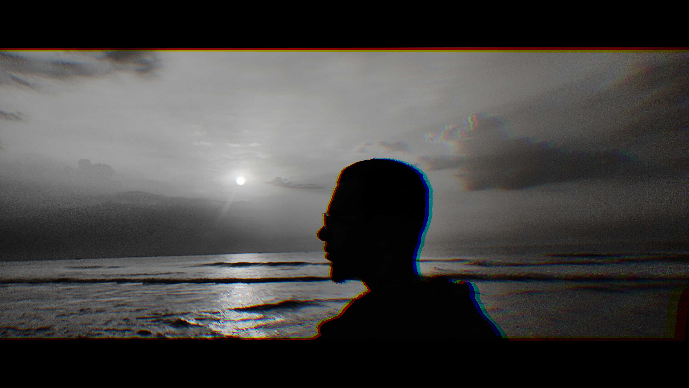

Summary:
Enthusiastic individual eager to leverage skills to benefit the
community.
Adaptable and open-minded, ready to face challenges and build a
successful career
with a reputable organization.
Education:
Bachelor of Engineering (B.E.) - Computer Science
May
2020 - Jul 2024
Vel Tech High Tech Dr.Rangarajan Dr.Sakunthala Engineering College,
Chennai
Higher Secondary - Computer Science
May 2018 - Jun 2020
Velammal Vidyalaya, Chennai
High School Diploma
Sri Venkateswara Vidhyalaya
Experience:
Creative Designer Intern
Jan
2024- Apr 2024
Vy Systems
- Designed various templates and social media flyers for promotion
and reach.
- Served as Client Service Manager handling various
clients ensuring seamless
updates and clear communication with my team
lead.
Research and Promotions Intern
Sep
2023 - Dec 2023
Evepaper
- Increased Evepaper's outreach by contributing to promotion work
- Compiled detailed articles on various topics such as AI, Venture
Capitalism,
Investment brand Risk Analysis etc.
- Completed the
internship with 4 star accreditation for excellent performance
Skills:
- Graphic Design
- Content Writing
- Public
Speaking
- Web Development
Certifications:
Semrush SEO Crash Course
check credential↗
UI/UX Design with Figma
check credential↗
Awards:
Best Paper Award
2023
Dr Mgr Educational and Research Institute
- Awarded with the Best Paper Award for research and presentation on
the topic -
"Ethical Perception of a Digital Era : Balancing responsibilities and
freedom"
-
Published the paper in the conference with a distinctive ISBN number.
hobbies
contact me